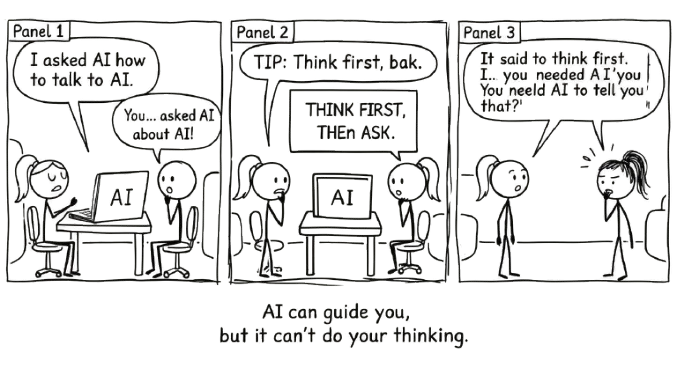

12 Using AI to Help You Use AI

12.1 The One Thing AI Can Do That Other Tools Can’t
AI can teach you how to use itself.
Excel cannot teach you how to use Excel. PowerPoint cannot walk you through making better slides. Email cannot help you write better emails.
But AI can, because it can ask you questions, understand your context, evaluate its own suggestions, and adjust based on your feedback.
This means you do not need a course or a manual to get started. You can use AI to figure out how AI fits into your work.
The most useful thing AI can do is not answer your question. It is help you figure out what question to ask.
12.2 The Core Idea: Meta-Prompting
Instead of asking AI to solve a problem directly, ask AI to help you figure out how to approach the problem.
| Direct Approach | Meta Approach |
|---|---|
| “How should I answer this question?” | “What is the best way to frame this question for an AI so I get useful help?” |
| “Give me strategies for using AI.” | “Ask me questions to understand my context, then recommend both obvious and unexpected ways I could use AI.” |
| “How do I improve my workflow?” | “Interview me about my role and responsibilities, then suggest AI tools and strategies I might not have considered.” |
The meta approach works better because AI asks clarifying questions first, learns your context, and gives you recommendations that fit your actual situation. Not generic advice aimed at nobody in particular.
12.3 The Consultation Prompt: Your Starting Point
Here is a prompt you can use right now. Copy it, paste it into any AI tool, and start the conversation.
You are an AI expert consultant. I would like your help understanding how I
could better use AI in my work.
Please ask me one question at a time. I will answer, then you ask the next
question. Keep asking until you understand:
- My role and responsibilities
- My main workflows and challenges
- My key objectives (what matters for success)
- My constraints (time, resources, skills, institutional requirements)
Once you have enough context, provide TWO types of recommendations:
1. Obvious opportunities: Clear, straightforward AI applications
(the low-hanging fruit most people think of)
2. Non-obvious opportunities: Unexpected or creative uses of AI I might not
have considered
Format your recommendations clearly with implementation tips for each.That is it. Paste it, start answering questions, and see what comes back.
12.4 Why This Works
When you ask AI to interview you before making recommendations, several useful things happen.
It gets your actual context. AI does not know anything about you at the start. By asking sequential questions, it builds up a picture of your discipline, your constraints, and what success looks like for you. Generic advice does not account for the fact that you manage compliance for a large team, or support early-career researchers, or run a small business with no IT budget. Context changes the recommendations entirely.
You get both obvious and non-obvious ideas. AI tends to suggest the predictable stuff first: automating reports, generating ideas, answering questions. Those are useful, but you have probably already thought of them. By explicitly asking for non-obvious recommendations, you push the model past its defaults. It starts connecting your specific constraints and workflows to capabilities you had not considered. The non-obvious ideas tend to be more useful, and they are the ones you would never have found by reading a generic “top ten AI tips” article.
AI can evaluate its own suggestions. Once it generates a list, you can ask it to assess which are most feasible, identify trade-offs, refine implementation steps, or suggest variations. This lets you iterate toward something practical rather than accepting the first answer.
It is a conversation, not a lecture. Unlike reading a guide or sitting through a workshop, you are actively shaping the advice by answering questions honestly, pushing back on ideas that do not fit, and exploring what is actually possible. The back-and-forth is where the useful stuff tends to surface. And because you are in control of the conversation, you can steer it toward the parts of your work that matter most.
12.5 A Real Example
Here is a simplified version of how this conversation might go.
You paste the consultation prompt.
AI asks: “What is your primary role, and what does a typical week look like?”
You say: “I am a teaching coordinator in a business faculty. I manage unit approvals, coordinate teaching support across 15 units, and help faculty integrate new teaching approaches.”
AI asks: “What is your biggest pain point right now?”
You say: “Administrative overhead. Tracking who needs what support, writing emails summarising policies to faculty who have not read them, managing compliance documentation.”
AI asks: “What would success look like for you?”
You say: “I would have time for strategic work instead of just admin. And faculty would feel confident designing assessments without constantly asking me the same questions.”
AI synthesises:
Obvious opportunities: Use AI to draft plain-language policy summaries. Use AI to help faculty write learning outcomes. Use AI to generate assessment design templates.
Non-obvious opportunities: Use AI to analyse your incoming faculty questions and identify common gaps in understanding, then create targeted guidance before people ask. Use AI as a quality-check tool: paste a unit outline and ask it to flag compliance risks or unclear learning outcomes. Use AI to build a simple FAQ that handles the routine questions so you can focus on the ones that actually need your judgement.
Notice what happened. Three questions. Honest answers. Targeted recommendations. The AI did not give generic suggestions about “leveraging AI for productivity.” It understood the specific role, constraints, and frustrations, so the recommendations are grounded in something real. You could act on any of them this week.
12.6 The Deeper Principle: AI as a Mirror
Here is what is actually going on when you ask AI to interview you.
It forces you to articulate your own work clearly.
By answering its questions, you end up spelling out:
- What you actually do (versus what you think you do)
- What matters most (versus what is just urgent)
- What is possible (versus what feels impossible)
- What you have not tried (because you did not know it was an option)
Often, the most useful part of this conversation is not the AI’s recommendations. It is the clarity you gain about your own work by having to explain it to something that knows nothing about you.
People regularly say things like: “I did not realise how much time I was spending on that until the AI asked about it.” Or: “Just explaining my challenges helped me see a solution on my own.” Or: “The recommendations were fine, but the real value was the clarity I got about what I actually needed.”
This is not a side effect. It is the point. The consultation prompt works because it puts you in the position of expert and the AI in the position of interviewer. You know the answers. It just asks the right questions. And in answering those questions, you often discover that you already knew what to do. You just had not said it out loud yet.
12.7 Practical Tips for Your Consultation
Be honest and specific. Do not give polished answers. The more honest you are about your constraints and challenges, the better the recommendations. “We have no budget,” “I do not have time to learn new tools,” “My organisation is sceptical of AI.” These are all useful context.
Ask follow-up questions. After getting recommendations, push further. “How would I actually implement the non-obvious ones?” “Which of these could I start with this week?” “What are the risks or drawbacks?”
Test one thing. Pick one obvious and one non-obvious recommendation. Try them for a week or two. Come back to the same conversation and report what happened. “I tried your suggestion about X. Here is what worked and what did not.” The AI will adjust. Iterate from there.
Come back periodically. This is not a one-off exercise. Your context changes. Your needs shift. The tools themselves change. Run this consultation again in a few months. Each time, you will be ready for different ideas, and you will ask sharper questions because you have more experience to draw on.
Share what you learn. If something works, tell a colleague. “I asked AI to help me figure out how to use AI, and it suggested this. Here is how it went.” Others might try their own version and find something entirely different that is useful for their context. That is the point.
Often, the most useful part of asking AI to interview you is not the recommendations it gives. It is the clarity you gain about your own work by having to explain it.
12.8 Getting Started Right Now
- Open your AI tool.
- Copy the consultation prompt from this chapter.
- Paste it and start answering questions honestly.
- Review the recommendations and pick one or two to try.
- Come back with what you learned and keep going.
This works with any AI tool and in any role. The skill you are building is not prompt engineering. It is the ability to think clearly about your own work, explain it precisely, and evaluate whether what comes back is useful. That skill transfers everywhere.
If you want to structure the prompts that come out of this consultation, the RTCF framework (Chapter 9) gives you a reliable way to build them. If you want to break complex problems into stages, prompt chaining (Chapter 10) shows you how.
But start here. Let AI help you figure out what you actually need.
Once AI has helped you figure out what to ask, VET helps you make sure you can stand behind the answer.